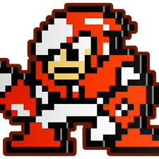
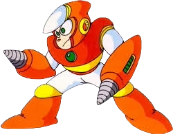

TIPS
- On the US-normal mode, Crash Man takes 2 hits from the Air Shooter. On Difficult, he takes 3. On a basic level, you want to jump at Crash Man and shoot towards him to bait him into the shot. In a damageless scenario you can typically walk under his jump and avoid the bomb.
ROLE
- Crash Man is a Robot Master from Mega Man 2. Crash Man will jump and shoot when Mega Man jumps or shoots. His weapon, the Crash Bomb is set on a timer and will explode where planted after a short period of time. His base seems to be located in an aeronautics lab of some sort.
ABILITIES
- Dr. Wily using the designs of Bomb Man and Guts Man as a base with high speed and agility, the use of high explosives as primary weapons, and clad in a thick armor that can effectively withstand explosions.